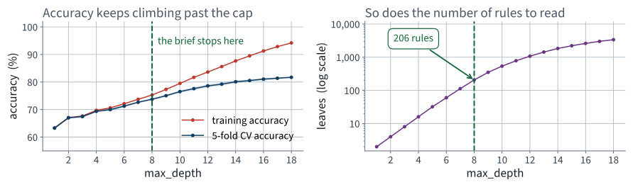
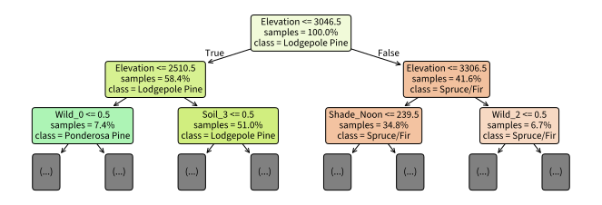
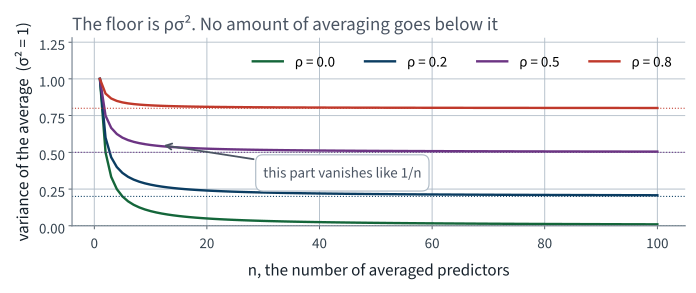
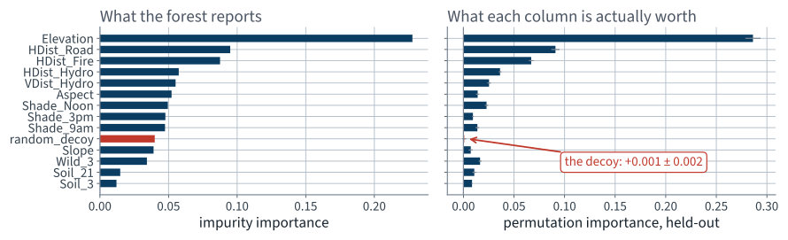

Forest CoverType · one tree you can read, two hundred you cannot, and what averaging can and cannot do
Lecture 5 Géron Ch. 5–6
Applications of Machine Learning
BSc Mathematics of Artificial Intelligence · Third year
Four lectures on one idea: a weighted sum $\boldsymbol\theta^{\intercal}\mathbf{x}$, fitted by least squares or by gradient descent, read through a sigmoid for a class — and judged on data it never saw.
Pipeline passed to cross-validation. Nothing derived from the
test set in the training path. Fixed seeds. Report the fold scores, not only
the mean.
Today’s model is not a weighted sum at all. It is a sequence of yes/no questions, and the sequence is the explanation. Then we fit two hundred of them, and ask what that buys and what it costs.
An agency that manages a national forest has to publish a map of forest cover type — which species dominates each 30 by 30 metre patch of ground — over an area far too large to survey on foot.
The survey: 581,012 patches, 54 cartographic columns, no missing values. We work on a stratified 60,000-patch subsample, split 48,000 / 12,000 before anything is fitted, and say so.
The map goes into the public record and decides where logging is permitted. A landowner refused a permit is entitled to ask why, so the agency wants each prediction to come with a reason a person can read: conditions on the measured columns, at most eight of them.
Keep that requirement in mind. It is what the model family of the first half of today satisfies, and what the second half gives up.
Seven classes, no natural ordering, no asymmetric cost stated by the agency. The default is accuracy — reported, as always, beside the number that says what nothing scores.
from sklearn.dummy import DummyClassifier
dummy = DummyClassifier(strategy="most_frequent").fit(X_train, y_train)
print(f"{dummy.score(X_test, y_test):.1%}") # 48.8%
| Model | Test accuracy | Species it can ever predict |
|---|---|---|
| Always “Lodgepole Pine” | 48.8% | 1 of 7 |
Anything below 48.8% is worse than a constant. The distance above it is the only part you actually earned.
A binary tree. Each internal node asks one question about one feature; each leaf carries a prediction.
No weighted sum anywhere, so no feature scaling: $x_k \le t_k$ is invariant under any increasing transformation of $x_k$.
The path from the root to the leaf is the justification the agency asked for: one condition per level, in the measured columns. That is what makes a tree readable, and it is free.
A node holds some training instances; write $p_k$ for the fraction in class $k$. Its Gini impurity is
the probability that two instances drawn from the node, with replacement, differ in class; a pure node scores 0. A split $x_k \le t_k$ sends $m_{\text{L}}$ instances left and $m_{\text{R}}$ right; CART picks the feature and threshold minimising the size-weighted impurity of the children:
Greedy, top down, one node at a time, until every leaf is
pure or a limit stops it. criterion="entropy",
$-\sum_k p_k \log_2 p_k$, ranks splits almost identically; we leave the default.
from sklearn.tree import DecisionTreeClassifier
free = DecisionTreeClassifier(random_state=42) # no depth limit
free.fit(X_train, y_train)
print(f"depth {free.get_depth()}")
print(f"leaves {free.get_n_leaves():,}")
print(f"train accuracy {free.score(X_train, y_train):.1%}")
depth 33
leaves 5,699
train accuracy 100.0%
100.0%: with eight patches per leaf it is perfect on its own data. Cross-validated on the training set it scores 82.1%, and on the test set, looked at once, 82.6% — far above the 48.8% anchor, so trees work here. But it is 33 levels deep, and the agency allows eight conditions.

Cross-validated on the training set, depth 1 to 18. The curve is still climbing at depth 18, 8.0 points above depth 8 — and every one of those points is bought with more rules than anyone will read.
tree = DecisionTreeClassifier(max_depth=8, min_samples_leaf=20,
random_state=42).fit(X_train, y_train)
| Unconstrained | Depth 8, leaf 20 | |
|---|---|---|
| Leaves | 5,699 | 163 |
| Mean conditions per prediction | 17.88 | 7.97 |
| Test accuracy | 82.6% | 73.0% |
Depth 8 is the brief’s eight conditions; a minimum leaf of 20 is so that “91% of the patches in this leaf” is a statement about twenty patches at least, not about one. Readability costs about ten points here, and the agency is told so.

The first three questions the model asks about any patch in Colorado. Two of them are about elevation. A patch’s eight answers are its justification — this is the thing to hold on to when we start averaging.
A stable metric, an unstable model. This is variance: the sensitivity of the fitted function to the particular training sample it happened to get.
The whole of today follows from one question: what does averaging do to variance?
An ensemble aggregates many models, and the book’s promise is that enough sufficiently diverse weak learners make a strong one. “Sufficiently diverse” is about to get a symbol, a formula and a measured value. First, the members.
| The data looks like | Why trees, averaged |
|---|---|
| A table: numbers and categories mixed, on different scales | a split $x_k \le t_k$ needs no scaling and no linear shape |
| Interactions nobody can write down — elevation and soil and aspect | a path through a tree is an interaction, found rather than specified |
| Tens of thousands of rows or more | enough to grow deep members whose errors differ |
| Accuracy matters more than a one-line reason | the vote is accurate; the single tree was the readable one |
Credit scoring, fraud flags, churn, click prediction, risk scores in medicine, nearly every tabular competition: the same shape of data, and on it a forest or a gradient-boosted ensemble is the first model a practitioner fits.
Not images, text or sequences: a pixel or a token is not a column with a meaning of its own, which is why Parts II–IV exist.
Forget trees for a moment. You have $n$ predictors of the same quantity, each with variance $\sigma^2$, and you average them. With $\operatorname{Var}(f_1) = \operatorname{Var}(f_2) = \sigma^2$ and $\operatorname{Corr}(f_1, f_2) = \rho$:
$\rho = 0$ halves the variance; $\rho = 1$ leaves it at $\sigma^2$, and averaging achieves nothing. For $n$ identically distributed predictors with a common pairwise correlation $\rho$, the same expansion — $n$ variances and $n(n-1)$ covariances $\rho\sigma^2$, over $n^2$ — gives

Four curves, four floors. The floor is set entirely by $\rho$ — which is why every ensemble variant you are about to meet is an attempt to lower it.
Point 4 is the one that gets forgotten, and it is the one we will measure — and be embarrassed by — later today.
Combine different algorithms fitted to the same data.
from sklearn.ensemble import VotingClassifier
vote = VotingClassifier(
[("tree", DecisionTreeClassifier(random_state=42)),
("logreg", LogisticRegression(max_iter=1000)),
("knn", KNeighborsClassifier(n_neighbors=5))], voting="soft")
voting="hard" — majority of the predicted labelsvoting="soft" — average of the predicted
probabilities; usually better, because a confident member outweighs
several hesitant onesDifferent algorithms make different kinds of errors, which is the informal way of saying $\rho$ is small. The formula applies unchanged.
Bootstrap aggregating. Draw $m$ rows from the training set with replacement, fit a tree, and repeat $n$ times.
Pasting is the same thing without replacement. It produces less diverse members, so bagging usually wins — but it is a cheap thing to cross-validate rather than assume.
Animation
from sklearn.ensemble import BaggingClassifier
bag = BaggingClassifier(
DecisionTreeClassifier(random_state=42), # unconstrained members
n_estimators=200, bootstrap=True, oob_score=True,
random_state=42, n_jobs=-1)
bag.fit(X_train, y_train)
print(f"out-of-bag {bag.oob_score_:.1%}")
The members are unconstrained trees. We want each one to have low bias, because averaging cannot remove bias — and we are about to average the variance away, so there is no reason to restrict their depth.
Each member never sees about 37% of the rows — its out-of-bag instances. Score each member on its own out-of-bag rows and you have a generalisation estimate with no validation split and no extra fit.
Cheap, and it does not replace the test set. It replaces
the validation set — and it estimates one member’s
procedure, not the ensemble you ship. With bootstrap=False there
are no out-of-bag rows and oob_score=True raises. If it comes out
much better than the test score, something in your pipeline saw the
out-of-bag rows anyway.
Bagging, plus one more source of difference: at every node of every tree, only a random subset of the features is considered for the split.
from sklearn.ensemble import RandomForestClassifier
rnd = RandomForestClassifier(n_estimators=200, max_features="sqrt",
random_state=42, n_jobs=-1).fit(X_train, y_train)
max_features="sqrt" is the classification
default: $\lfloor\sqrt{54}\rfloor = 7$ of the 54 columns, drawn afresh at each
node. A tree with 200 nodes therefore draws 200 different subsets.
| 200 members, 48,000 training patches | 10 members | 200 members |
|---|---|---|
| Bagging | 87.7% | 89.8% |
| Random forest | 85.9% | 88.4% |
| The legible depth-8 tree | — | 73.0% |
| Always “Lodgepole Pine” | — | 48.8% |
Both ensembles beat the readable tree by fifteen points and the unconstrained one by six. Most of the gain arrives by the first few dozen members, as $(1-\rho)\sigma^2/n$ says it should: the last 190 buy about two points.
Measured across 20 disjoint training sets of 20,000 rows, so that the shared part of the variance has something to come from:
| Ensemble | $\rho$ | One member’s accuracy | Ensemble accuracy |
|---|---|---|---|
| Bagging | 0.072 | 78.8% | 89.8% |
| Random forest | 0.043 | 73.6% | 88.4% |
The forest lowers $\rho$ as the formula promised — and the ensemble with the higher $\rho$ is the more accurate.
Point 4 of the formula’s reading, measured: every mechanism that lowers $\rho$ does it by handicapping the members, $\sigma^2$ sits in both terms, and the formula says nothing about bias.
We removed the variance. Ask what happened to the thing the agency asked for.
total = sum(t.get_n_leaves() for t in rnd.estimators_)
print(f"{total:,} leaves across the 200 trees")
1,497,919 leaves across the 200 trees
The justification for one prediction is now 200 decision paths and a vote: fifteen points of accuracy over the readable tree, and four orders of magnitude more model to read.
| Readable tree | Bagged forest, 200 trees | |
|---|---|---|
| Test accuracy | 73.0% | 89.8% |
| Predictions that move when the survey is resampled | 9.1% | the variance cut by nine tenths |
| What backs one prediction | 8 conditions | 200 paths and a vote |
About seventeen more patches in every hundred mapped right, and a map that stops changing when the survey is resampled. That is the case for the ensemble, and it is why this is the model a practitioner fits on a table.
The cost is the justification. A map does not need one per patch; a refused permit does. Ship the forest for the map, and the readable tree wherever a person has to answer for the decision.
imp = pd.Series(rnd.feature_importances_, index=X_train.columns)
print(imp.sort_values(ascending=False).head(5).round(3))
feature_importances_ sums, over every node that
split on a feature, the weighted impurity reduction that split achieved
— the impurity decrease $\Delta I$ of the opening, accumulated.
It runs, it is fast, and the top of the list is entirely sensible: elevation first, then the distances. Nothing invites suspicion.
Before trusting any ranking, ask what it would look like on a variable you know carries no information. If you cannot answer, add one and find out.
rng = np.random.default_rng(42)
X_tr2 = X_train.assign(random_decoy=rng.random(len(X_train)))
X_te2 = X_test.assign(random_decoy=rng.random(len(X_test)))
rnd2 = RandomForestClassifier(n_estimators=100, max_features="sqrt",
random_state=42, n_jobs=-1).fit(X_tr2, y_train)
A column of uniform random numbers. It cannot possibly carry information about which trees grow where. Where does it rank among the 55?
Before the answer, a second measurement to set beside it. Shuffle one column of the held-out set, re-score, and see how much accuracy falls. Repeat, and report a spread.
from sklearn.inspection import permutation_importance
r = permutation_importance(rnd2, X_te2, y_test, n_repeats=5,
random_state=42, n_jobs=-1)
permutation_importance goes beyond Chapter 6.
beyond the syllabus, for context
It is here because the alternative is to ship the biased measurement, and
because the idea — break the column and see what breaks — is
worth knowing.

Same model, same columns, same ordering of the rows. The decoy is tenth on the left and zero on the right.
Everything so far trains members in parallel and averages them. Boosting trains them in sequence, each one correcting its predecessor.
Two consequences: boosting cannot be parallelised across members, and it is much easier to overfit with. Both follow from the sequence.
from sklearn.ensemble import AdaBoostClassifier
ada = AdaBoostClassifier(DecisionTreeClassifier(max_depth=1),
n_estimators=200, learning_rate=0.5,
random_state=42)
If it overfits, reduce n_estimators or
learning_rate, or regularise the base estimator.
Same sequence, different correction. Instead of reweighting the instances, fit each new learner to the residual errors of the ensemble so far.
learning_rate scales each member’s contribution. A low
rate needs more members and generalises better — this is
shrinkagen_iter_no_changeHistGradientBoostingClassifier bins each feature
into at most 255 buckets before growing anything, so a split search costs
$O(\text{bins})$ rather than $O(m)$.
from sklearn.ensemble import HistGradientBoostingClassifier
hgb = HistGradientBoostingClassifier(max_iter=100, learning_rate=0.05,
early_stopping=False,
random_state=42).fit(X_train, y_train)
max_bins (255) categories
per columnOn this dataset, at a budget that fits a lecture, it lands several points below the bagged forest. The notebook measures both, and measures what happens when you raise the learning rate. Usual is not always.
rf = RandomForestClassifier(n_estimators=300, max_features="sqrt",
oob_score=True, n_jobs=-1, random_state=42)
hgb = HistGradientBoostingClassifier(learning_rate=0.05, max_iter=500,
early_stopping=True, random_state=42)
HistGradientBoosting takes missing values and
categories as they arelearning_rate, let early stopping pick the
number of roundsclass_weight="balanced", and per-class recall
beside the accuracy| Situation | Reach for |
|---|---|
| A high-variance base learner and time to spare | bagging or a random forest |
| Many weakly informative columns | a random forest — feature subsampling earns its keep |
| You want the strongest tabular model | histogram gradient boosting — usually, and measure it against a forest anyway |
| Several strong, different models and time to validate a blender | stacking — StackingClassifier, whose blender sees only cross-validated predictions; built by hand it memorises |
| You must justify individual predictions | none of them — go back to one tree |
The last row is the one this lecture exists to teach, and it is the row people skip.
The diagnosis was instability, not inaccuracy. So test the thing that was diagnosed, not the thing that is easy to measure.
| Random forest, 20 disjoint training sets | Measured |
|---|---|
| Variance of one member’s correctness | 0.16734 |
| Variance of the average of 20 | 0.01508 |
| Share of the variance the averaging removed | 91.0% |
| The floor $\rho\sigma^2$ it cannot reach below | 0.00721 |
Nine tenths of a single member’s variance, gone — and we knew before starting both that it would stop and roughly where. The notebook repeats the twenty-subsample disagreement measurement on a forest; predict the answer before you run it.
max_features=None on the random forest, which turns it back
into bagging. Watch $\rho$ rise, each member get better, and the ensemble
accuracy rise with it — the trade of the whole lecture, in one keyword.
Design exercise · in the manner of an ML system-design interview
Nine steps follow, each with the pitfall that catches a first attempt and what to do about it. The model at the centre is today’s: an ensemble of trees on a table.
| Pitfall | What happens | What to do |
|---|---|---|
| Delayed feedback | a click can arrive minutes or hours after the impression; a row logged too early is a negative that is not one | label only impressions older than the attribution window, or model the delay explicitly |
| Invalid traffic | bots and accidental taps are clicks in the log and not in the world | filter with the platform’s invalid-traffic rules before anything is fitted |
| Unseen impressions | an ad logged below the fold was never a candidate for a click | keep viewable impressions only, and say so in the definition |
Write the label’s definition down before the first fit. Every later number is a number about that label.
class_weight="balanced" fixes the ranking and wrecks the
probabilities: it tells the model that clicks are as common as non-clicks,
and the auction then overbids on everything. Reweighting is a tool for a
classifier that outputs a label; this system outputs a price.
What the large platforms do next — the trees as feature generators for a linear or neural layer — starts from this model and belongs to Part II.
Log → viewable impressions, invalid traffic out, labels after the window → time split → history features as of each impression → sampled negatives → boosted trees with early stopping → probabilities corrected and calibrated → log loss and reliability against the anchor → A/B test → retrain and monitor.
| Pitfall | Address it by |
|---|---|
| Accuracy, or AUC alone | log loss against the base-rate anchor, and a reliability diagram |
| Clicks that arrive late | labelling after the attribution window |
| A random split | splitting by time, with a gap |
| History features that see the future | as-of computation, in the serving pipeline’s code |
| Sampling or reweighting the negatives | correcting the log-odds; never class_weight for a price |
| Too many boosting rounds | early stopping on the validation day |
| New ads, miscalibrated segments | back-off to campaign rates; calibration per segment |
| The model trains on its own choices | a randomised slice; A/B tests on live traffic |
| Topic | Chapter |
|---|---|
| Voting classifiers, hard and soft | 6 |
| Bagging, pasting, out-of-bag evaluation | 6 |
| Random forests, feature importance | 6 |
| AdaBoost, gradient boosting, histogram-based boosting | 6 |
| Stacking and the blender | 6 |
| Decision trees, Gini impurity, the CART algorithm | 5 |
Not presented — for afterwards
five, in the style of the written paper
bootstrap=False and oob_score=True. State what happens and why. [3]Solutions on Lecture 6’s deck.
Solutions on Lecture 6’s deck.
The five set at the end of Lecture 4
not part of this lecture
1. Gradient descent on the same data, with the features unscaled, takes many more steps to converge than on…
Unscaled features make the contours elongated, so the gradient points across the valley rather than along it.
2. On the Titanic manifest, your logistic regression on one-hot encoded columns produces coefficients that look…
Five come from the encoder, one from you. The repair is both: drop one level per categorical, and delete the engineered column.
FamilySize = SibSp + Parch + 1, an identity rather than a correlation. Dropping a level alone still leaves the rank one short of the column count, because the dependency you wrote yourself survives it3. A model reaches 0.80 accuracy and is badly calibrated. Explain what that means, and name a decision it would…
Its predicted probabilities do not match observed frequencies; any decision using a cost-weighted threshold is then wrong.
4. In a logistic regression with first class as the reference level, the coefficient on Pclass_3 is $-1.169$.…
It multiplies the odds of survival by $e^{-1.169} = 0.31$, relative to first class, holding the other features fixed.
5. State the update rule for batch gradient descent, and say what changes in it for stochastic gradient descent…
$\theta \leftarrow \theta - \eta\nabla J$. Only the set the gradient is computed over changes; the rule does not.
Lecture 6 · Géron Ch. 7–8
What unsupervised learning is, and four tasks from practice, each
matched to the one tool that fits
PCA, k-means and DBSCAN on a worked example, and what to look out for
Anomalies, where to spend forty labels, and a design exercise
Run the Lecture 5 notebook first